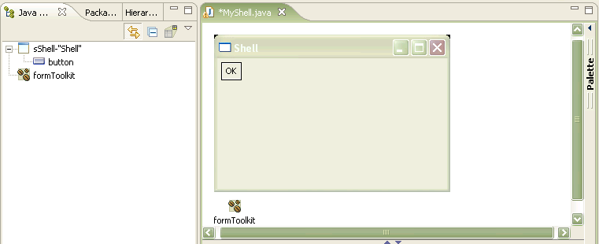

- Support for Eclipse 3.2
- Ability to create and edit JFace viewers
- Enhanced SWT GridLayout
- Support for Mac OSX
- Default layout for SWT Composites and AWT/Swing Containers
- Java source caret location tracks graphical components
- Support for SWT TreeColumn
- AWT/Swing parent control selection
- XMI View for developers to see internals of EMF model
The Visual Editor queries the build path of the project when it is opened against a .java file, and if org.eclipse.ui.forms is present then a palette drawer for the Eclipse Form Toolkit will be shown.

The first time an entry is dropped from the palette two objects will be created, one for the control and one for an instance of the factory org.eclipse.ui.forms.FormToolkit.

The instantiation of the forms toolkit control is done using the form toolkit factory createXXX method, instead of the usual SWT technique of a two argument constructor of parent composite and style bit. Where the factory method has additional arguments such as createButton(Composite parent, String text, int styleBit) the Visual Editor recognizes that the text property of the button is the third factory argument and uses it when the text is set.
private void createButton() {
button = getFormToolkit().createButton(top, "OK", SWT.PUSH);
}
When a second and subsequent form toolkit controls are dropped from the palette a prompt is used to indicate which of the existing formToolkit factories should be used. This allows more than one toolkit to be used per class.
The list of currently supported forms factory methods are:
- createButton(Composite parent, String text, int style);
- createComposite(Composite parent, int style);
- createCompositeSeparator(Composite parent, int style);
- createExpandableComposite(Composite section, int style);
- createSection(Composite parent, int style);
- createForm(Composite parent, int style);
- createScrolledForm(Composite parent, int style);
- createLabel(Composite parent, String text, int style);
- createText(Composite parent, String text, int style);
- createHyperlink(Composite parent, String text, int style);
- createImageHyperlink(Composite parent, int style);
- createText(Composite parent, int style);
- createTree(Composite parent, int style);
Expandable Composite and Section
The ExpandableComposite control has custom behavior, whereby it has a priveledge child control that is its client. With the Visual Editor the first control that is dropped onto an ExpandableComposite becomes the client. Subsequent controls cannot be dropped onto the ExpandableComposite, although the client can be deleted. This is shown in the example below where an ExpandableComposite has been dropped onto the composite in an Eclipse view part. A Composite from the forms palette has been dropped onto the ExpandableComposite and become the argument to its setClient(Control) method.private void createExpandableComposite() {
expandableComposite = getFormToolkit().createExpandableComposite(top,
ExpandableComposite.TWISTIE | ExpandableComposite.TITLE_BAR);
expandableComposite.setExpanded(true);
createComposite();
expandableComposite.setClient(composite);
}
private void createComposite() {
composite = getFormToolkit().createComposite(expandableComposite);
}
The Section forms toolkit widget is a subclass of ExpandableComposite and inherits this behavior having a priveledged client child. A common way in which controls like ExpandableComposite and Section are used is that a Composite is added as the client into which further controls are dropped.
When ExpandableComposite and Section are dropped from the palette the expanded property is set to true so that you can compose into the client and visually see the result of this. You can set the expanded property to false to collpse the composite if required, but because of the WYSIWYG nature of the Visual Editor you will no longer see the client in the graph viewer.
Form
Form is similar to ExpandableComposite in that is has a priviledged child control, however this is implictly always there rather than having to be added. This is the body of the Form and the Visual Editor represents this visually on the JavaBeans view as a (composite) child of the form. There is no instance variable created to represent the form's body. When children are dropped onto the (composite) they become children of the form's body.private void createButton() {
button = getFormToolkit().createButton(form.getBody(), "OK", SWT.PUSH);
}